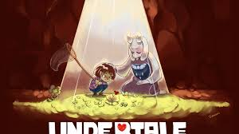
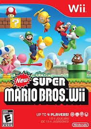
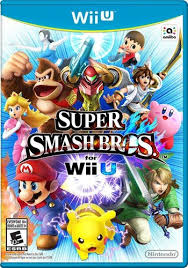

My Favorite Video Games
Game Covers
Game Covers
| Rank | Title of Game | Genre | What I liked | description |
|---|---|---|---|---|
| 5 | Undertale | Role Playing Game | My favorite thing about this game is the story and the music | RPG where killing or saving determines the story | 
| 4 | The Binding of Isaac | Roguelike | My favorite thing about this game is that everytime you play the game its not the same as the last time because you get random items. | Top-down dungeon crawler game where the player controls Isaac as he explores his basement. |
| 3 | Supermario Bros | Platform game | My favorite thing about this game is when playing the Wii version with friends and family its chaotic and its the first game I played and the game I've put the most time in. | a platform game where Mario must race through the Mushroom Kingdom and save Princess Toadstool | 
| 2 | Minecraft | Sandbox, Survival, and Open World | My favorite thing about this game is playing with other people and being able to do whatever you want | Minecraft is a video game in which players create and break apart various kinds of blocks in three-dimensional worlds |
| 1 | Super smash bros | Fighting, Platformer, and Action | My favorite thing about this game is plating with family and friends and yelling at eachother | Series of crossover fighting video games published by Nintendo, and primarily features characters from various Nintendo franchises | 